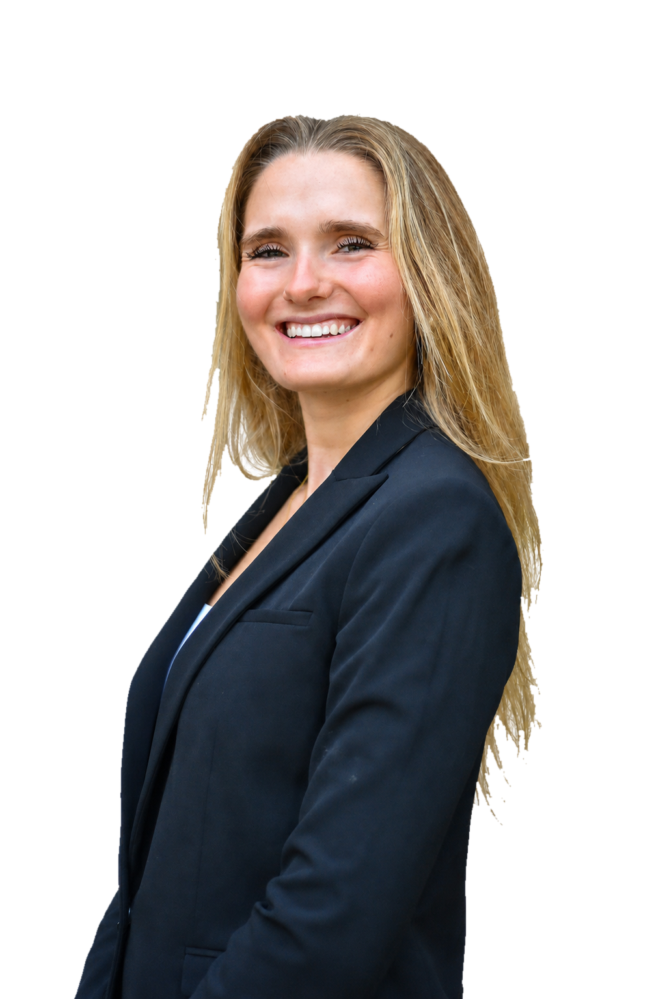

Education
Michigan SI
A background in information, UX, data, product thinking, and how people actually use technology.
About
I help people and businesses figure out where AI belongs, what should stay human, and how messy work can become clearer, repeatable systems.

This is my home base: who I am, what I am building, and how I can help.
I am a University of Michigan School of Information graduate joining Okta as a Product Analyst. My work sits between technology, people, data, and design, with a focus on making AI practical instead of overwhelming.
For small businesses, I audit workflows and customer journeys to find where AI or better systems would help, then turn that into a clearer starting point.
Alongside the client work, I share the thinking behind it: AI operating systems, research, workflow design, website audits, data storytelling, product judgment, and small projects I am building in public.
What connects it
The thread is simple: understand the work, find the repeated friction, keep the human judgment, and build a system that gets better over time.
A background in information, UX, data, product thinking, and how people actually use technology.
Incoming Product Analyst work that keeps the technical side tied to real users, decisions, and business context.
A living operating system for projects, agents, memory, handoffs, research, and repeatable skills.
Practical website, workflow, Shopify, and AIOS audits for owners who need clarity before implementation.